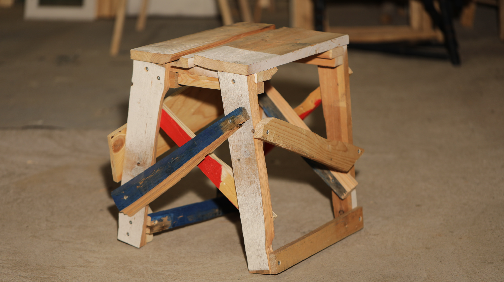
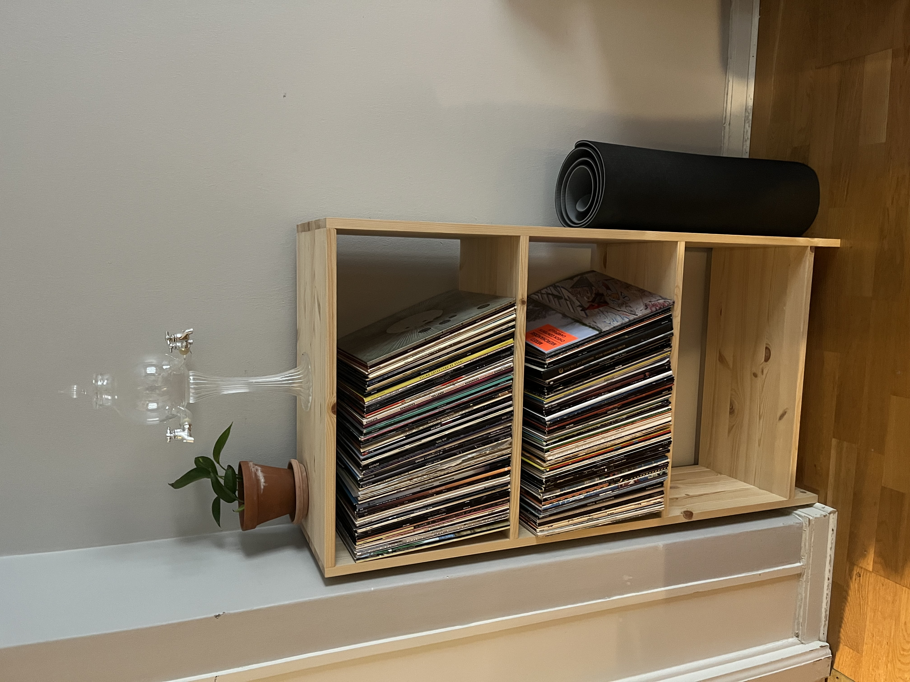
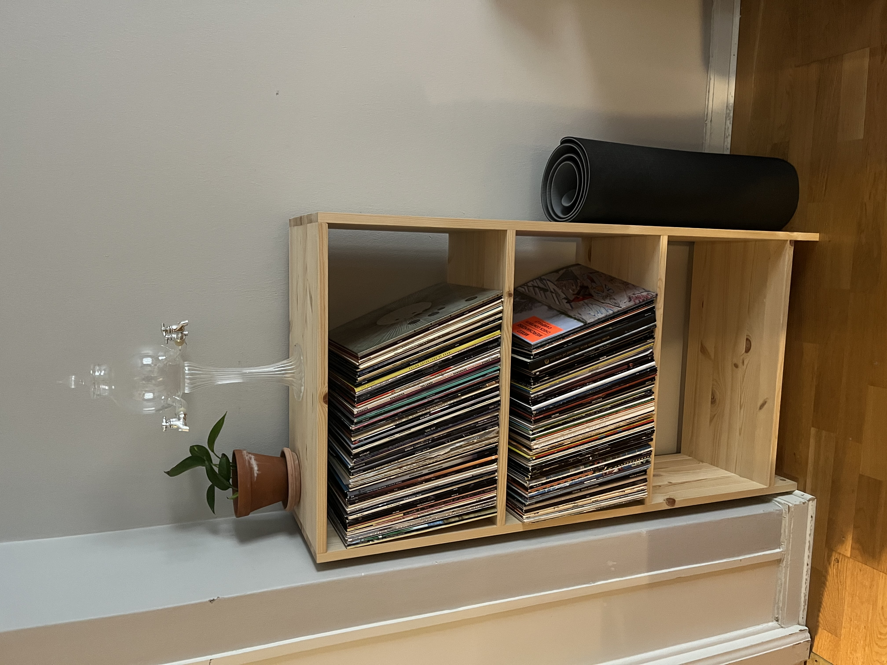

Pall - Stockholm 2024-12-01

Byggd enligt Finn Ahlgrens principer om "Råsnickeri". Möbeln ska kunna byggas utan avancerade maskiner och på en begränsad yta. Materialet ska vara enkelt och gärna återanvänt. Någon ritning att utgå från behövs ej. Fokus ligger på processen snarare än resultatet. Enligt mig är det ett befriande arbetssätt. Ofta spenderar jag mycket tid på att fundera ut en perfekt konstruktion och i värsta fall ägnas så mycket tid åt planeringen att projektet aldrig blir av. "Done is better than perfect" helt enkelt.
 
